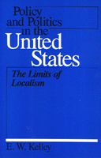

Examines the government's methods and goals accounting for the emerging centrism of policy formation
Examines the government's methods and goals accounting for the emerging centrism of policy formation


 Examines the government's methods and goals accounting for the emerging centrism of policy formation
Examines the government's methods and goals accounting for the emerging centrism of policy formation

|  |
Policy and Politics in the United StatesThe Limits of LocalismE. W. Kellypaper EAN: 978-0-87722-268-2 (ISBN: 0-87722-268-1) |
Facing a tension between bureaucracy and democracy, the United States and other industrialized nations have found it increasingly difficult to formulate policies adequate to the complex tasks they undertake. Many are led to question whether they, can still be controlled democratically. Focusing on issues common to all democracies, like economic policy and social welfare, and those particular to the individual country, the volumes in this series explore how some of the major democracies have dealt with the growing specialization and widening scope of government.
In the United States, many policies that affect citizens—such as those in education and water management—have traditionally been determined and delivered at the local level. Accounting for the emerging centralism of policy formation, E. W. Kelley here details what areas of public policy national government has sought to control, examines its methods for effecting its goals, and notes the private and state level political obstacles to federal policy authority.
Significant federal command over many policies is a relatively recent development in American history, achieved principally through "negative regulation." Under the threat that the federal government will cease to fund programs already in place, state and local governments are made to acquiesce to various federal mandates. Thus, policy and spending procedures in areas ranging from services and entitlements to housing and highway construction have been largely centralized. Nevertheless, local political forces—private interests and a "weak party" system—are still able to curb federal policy designs. Since candidates for national office are locally selected, to be and remain successful, they must reflect strictly local interests in a national body. While the Congress selectively usurps state and local policy options, the same locally based electoral system and a legacy of suspicion of federal authority give states and the private sector significant if dwindling influence over policy decisions.
E. W. Kelley is Professor of Government at Cornell University.
Political Science and Public Policy
Policy and Politics in Industrial States, edited by Douglas E. Ashford, Peter J. Katzenstein, and T.J. Pempel.
Each volume in Policy and Politics in Industrial States, edited by Douglas E. Ashford, Peter J. Katzenstein, and T.J. Pempel, is a sophisticated textbook that focuses on a single country but in a comparative policy context. Each consists of a balance of analysis and primary documents for six major issues. The issues include topics like economic policy, labor relations, social welfare, and the internal organization of the state.
© 2015 Temple University. All Rights Reserved. This page: http://www.temple.edu/tempress/titles/424_reg.html.